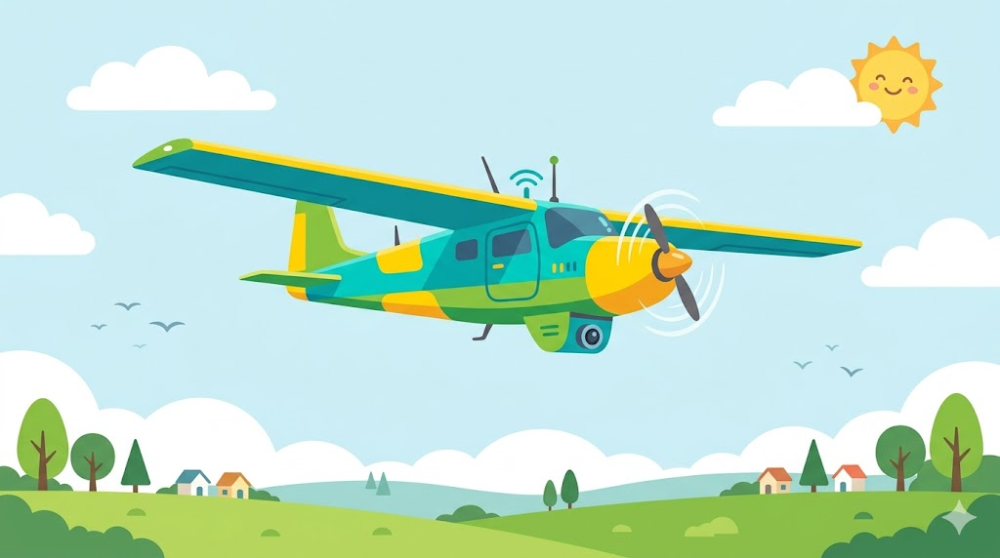
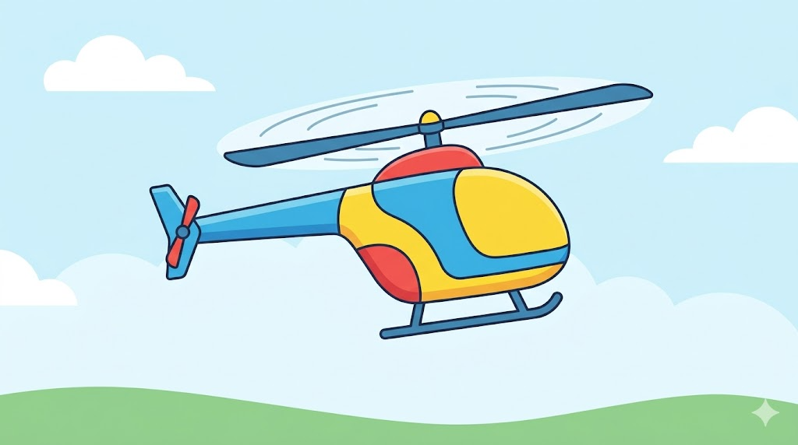
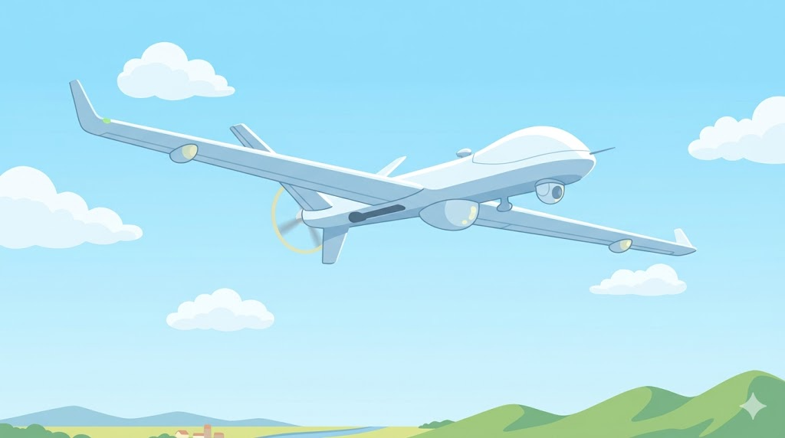
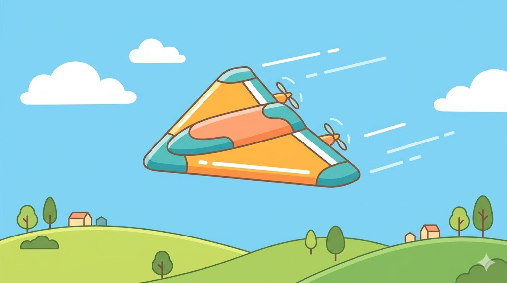
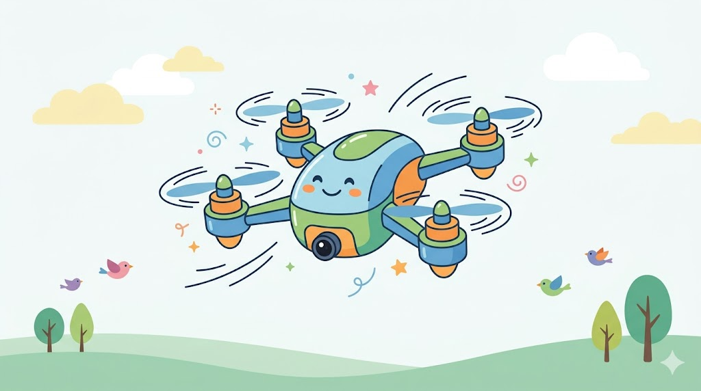

無人機不一定都長得像空拍機。有些像飛機、有些像直升機、有些長得很特別。外型不同，通常代表它的任務、飛法和控制方式也不同。這一頁先用比較的方式看懂幾種常見類型，再找出我們這學期的主角。
無人機種類很多，但這門課會專注在四軸無人機：四個馬達、四片螺旋槳，能原地起飛、停在空中，也最適合在學校練習控制。

外型像一架小飛機，靠機翼產生升力，所以必須一直往前飛。它的優點是省電、速度快、可以飛很遠；缺點是不能像空拍機一樣停在原地，起飛和降落也需要比較大的空間。

外型像縮小版直升機，有一個大主旋翼，通常還需要尾旋翼幫忙保持方向。它可以原地起飛、降落和停懸，但機械結構比較複雜，控制起來也比較不容易。

這類無人機通常體型比較大，設計目標是飛得久、飛得遠、帶著儀器執行任務，例如觀測、測量或長距離巡查。它離我們的校園操作比較遠，這裡先知道有這一類就好。

有些無人機會做成三角翼或其他特殊外型，目的可能是讓它飛得更快、更穩，或適合特定任務。這類無人機提醒我們：外型不是裝飾，而是為了任務設計。

四軸無人機有四個馬達、四片螺旋槳，就是最常見的空拍機外型。它能原地起飛、停在空中，也能往前、往後、左右移動，非常適合拿來學「怎麼控制飛行」。
四軸不是所有任務都最強，但它最適合拿來學飛行控制：不用跑道、動作直覺，也能連到後面的反作用力、反扭矩和馬達配置。
📚 用漫畫看：為什麼選四軸？四格漫畫：場地小、動作直覺、連到自然原理、生活中常見 →固定翼無人機飛得遠又省電，聽起來很厲害。那為什麼學校課程還是比較適合從四軸開始？（提示：想想場地大小、能不能停在空中、誰來操作。）